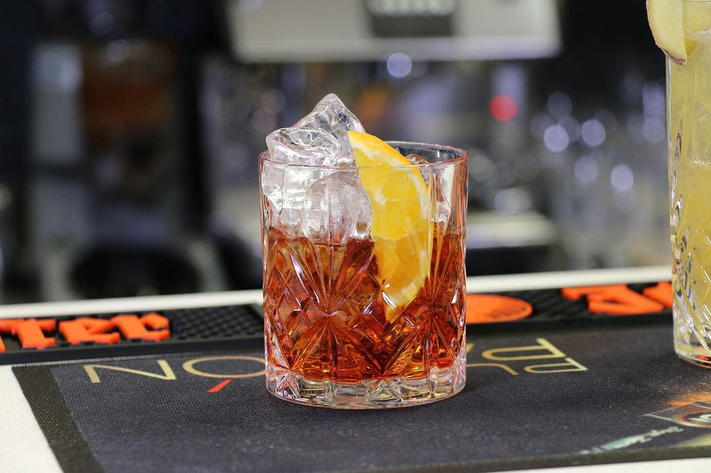

Negroni
네그로니
#따뜻하고 포근한 #발라드 #쌉쌀하고 깊은 #탄산 없음 #높은 도수

Ingredients
- 비터 캄파리 30ml
- 진 30ml
- 스위트 레드 베르무트 30ml
- 얼음 100g
- 오렌지 1peel
- 올드 패션드 글라스 1개
Recipe
- 올드 패션드 글라스에 얼음을 채워줍니다.
- 얼음 위에 비터 캄파리, 진, 스위트 레드 베르무트를 모두 부어주고 잘 저어줍니다.
- 오렌지 슬라이스 반 조각을 넣어 가니시 해줍니다.
History
네그로니는 1920년대 프랑스에서 유래했다는 설과 함께, 이탈리아에서 아메리카노 칵테일의 변형으로 발전하여 1950년대 중반부터 현재의 형태로 정착되었습니다.
정확한 유래가 알려지지 않아 많은 가설이 있는데 그 중 가장 널리 알려진 유래는 1919년 이탈리아 피렌체의 비아 데 토르나부오니에 있던 카페 카소니(현재 카페 자코사)에서 바텐더 포스코 스카르셀리가 그의 단골 손님이었던 카밀로 네그로니 백작을 위해 처음 만들었다는 것입니다. 네그로니 백작은 평소 마시던 아메리카노에 탄산수 대신 진을 넣어 더 강하게 만들어 달라고 요청했고, 스카르셀리는 아메리카노와 구별하기 위해 레몬 대신 오렌지 장식을 추가했다고 합니다.
하지만 이 가설은 캄파리가 1860년에 처음 생산되었기 때문에 1857년에 파스칼 올리비에 드 네그로니 백작이 세네갈에서 이 칵테일을 발명했다는 이야기는 시기적으로 맞지 않는다고 합니다.
또다른 가설로는 1919년 이탈리아 트레비소에 네그로니 디스틸레리를 설립한 기사 구글리엘모 네그로니가 현재 Old 1919 (Antico Negroni 1919)로 판매되는 붉은색 아마로를 생산했으며 이 아마로가 현대의 캄파리 기반 칵테일과 관련이 있다고 합니다. 증거는 없지만, '1919'라는 숫자가 칵테일 기원으로 언급되는 이유일 수 있다고 합니다.